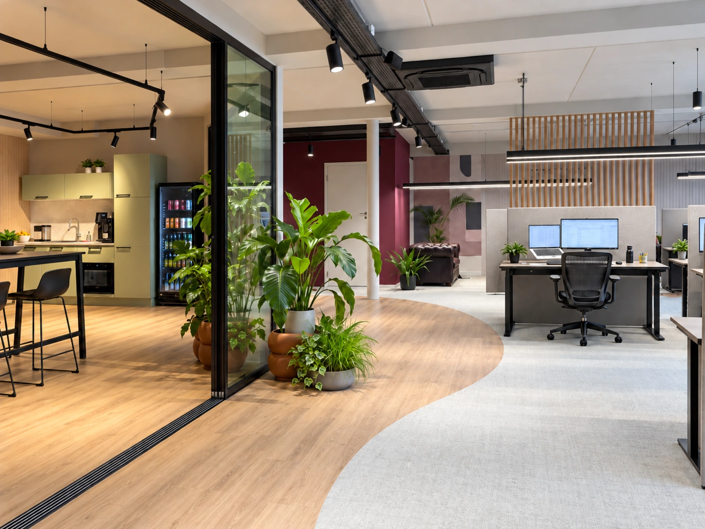

Hybride werken
Flexplekken op kantoor: wanneer werken ze wel en wanneer niet?
Flexplekken passen wanneer aanwezigheid en werkzaamheden daarom vragen en er voldoende geschikte plekken beschikbaar zijn. Een combinatie van vaste en gedeelde werkplekken kan ook een goede oplossing zijn.

Een vast bureau voor iedere medewerker was jarenlang vanzelfsprekend.
Iedereen had zijn eigen plek, zijn eigen ladeblok en vaak ook zijn eigen stoel. Maar nu medewerkers vaker thuiswerken en niet iedere dag tegelijk op kantoor zijn, verandert de functie van het kantoor.
Dat betekent niet automatisch dat ieder bedrijf moet overstappen op flexplekken.
Een flexplek werkt alleen wanneer de rest van de werkomgeving daarop is ingericht.
Er moeten voldoende verschillende plekken zijn om geconcentreerd te werken, te bellen, samen te werken en elkaar informeel te ontmoeten. Ook moet duidelijk zijn hoeveel medewerkers gemiddeld en op piekmomenten aanwezig zijn.
Daarom begin ik niet met de vraag hoeveel bureaus er weg kunnen.
Ik begin met de vraag:
Hoe wordt jullie kantoor daadwerkelijk gebruikt?
Wat is een flexplek?
Bij een flexplek heeft een medewerker geen vaste, persoonlijke werkplek.
In plaats daarvan kiest iemand bij binnenkomst een beschikbare plek.
Dat kan een standaard bureau zijn, maar binnen een goed ontworpen werkomgeving zijn er meestal verschillende soorten werkplekken.
Denk bijvoorbeeld aan:
- reguliere werkplekken
- stiltewerkplekken
- belplekken
- kleine overlegplekken
- vergaderruimtes
- projectplekken
- informele zitplekken
- werkcafés
Dat principe wordt ook wel activiteitgericht werken genoemd.
Niet de medewerker heeft één vaste plek, maar de activiteit bepaalt welke plek op dat moment het beste past.
Waarom zijn flexplekken interessant geworden?
De belangrijkste reden is eenvoudig.
Niet iedereen is iedere dag op kantoor.
Volgens het CBS maakte in 2025 ongeveer 80 procent van de Nederlandse bedrijven werken op afstand mogelijk. Van alle werknemers had 61 procent daadwerkelijk de mogelijkheid om buiten kantoor te werken. Bij bedrijven met 50 tot 250 medewerkers bood 92 procent thuiswerken aan.
Daardoor kan een situatie ontstaan waarin een kantoor op sommige dagen vol zit en op andere dagen half leeg is.
Wanneer iedere medewerker toch een eigen bureau houdt, worden veel vierkante meters nauwelijks gebruikt.
Flexplekken kunnen dan helpen om de beschikbare ruimte efficiënter in te zetten.
Maar dat is wat mij betreft niet het belangrijkste voordeel.
De grootste kans zit erin dat je ruimte die vrijkomt niet simpelweg verwijdert, maar anders gaat gebruiken.
Minder bureaus betekent niet automatisch minder kantoor
Dat is een belangrijk onderscheid.
Stel dat een bedrijf vijftig medewerkers heeft, terwijl er gemiddeld dertig tot vijfendertig tegelijk op kantoor zijn.
Dan zijn vijftig vaste bureaus waarschijnlijk niet nodig.
Maar dat betekent niet dat je de overige ruimte moet schrappen.
Je kunt die vierkante meters bijvoorbeeld gebruiken voor:
- kleine overlegplekken
- stiltewerkplekken
- belruimtes
- projecttafels
- een aantrekkelijkere lunchruimte
- informele ontmoetingsplekken
- extra vergaderruimtes
De overheid ziet dezelfde ontwikkeling. Onderzoek naar hybride werken laat zien dat kantooromgevingen steeds meer verschillende werkprocessen moeten ondersteunen en dat een mix van functies belangrijker wordt.
Het kantoor wordt daarmee minder een verzameling bureaus en meer een omgeving waarin verschillende soorten werk mogelijk zijn.
Het kantoor krijgt een andere functie
Thuis kun je vaak prima een rapport schrijven, administratie doen of geconcentreerd aan een presentatie werken.
Waarom zou iemand daarvoor naar kantoor komen?
Steeds vaker ligt de toegevoegde waarde van kantoor in andere activiteiten:
- collega's ontmoeten
- samenwerken
- brainstormen
- kennis delen
- klanten ontvangen
- samen beslissingen nemen
- onderdeel zijn van de organisatie
Dat betekent dat de verhouding tussen individuele werkplekken en gezamenlijke ruimtes verandert.
Een kantoor met alleen rijen bureaus sluit daar minder goed op aan.
Flexplekken kunnen ruimte vrijmaken voor die andere functies.
Wanneer werken flexplekken goed?
Een flexconcept werkt vooral wanneer er vooraf goed naar het werkproces wordt gekeken.
Niet ieder bedrijf werkt hetzelfde.
Een administratiekantoor heeft andere behoeften dan een marketingbureau. Een IT-bedrijf werkt anders dan een zorgorganisatie. En binnen één bedrijf kunnen verschillende teams weer totaal andere werkzaamheden uitvoeren.
Daarom kijk ik bijvoorbeeld naar:
- hoeveel medewerkers dagelijks aanwezig zijn
- welke dagen het drukst zijn
- hoeveel tijd medewerkers geconcentreerd werken
- hoeveel er wordt gebeld
- hoeveel overleg plaatsvindt
- hoeveel klantbezoek er is
- welke teams intensief samenwerken
- welke functies privacy nodig hebben
Pas daarna kun je bepalen hoeveel reguliere werkplekken werkelijk nodig zijn.
De bezettingsgraad is belangrijk, maar niet alles
Bij flexwerken wordt vaak gerekend met een ratio.
Bijvoorbeeld acht werkplekken voor tien medewerkers.
Dat klinkt overzichtelijk, maar zo'n getal zegt niet alles.
Misschien zijn op dinsdag vrijwel alle medewerkers aanwezig en op vrijdag bijna niemand.
Dan kan een gemiddelde bezettingsgraad een vertekend beeld geven.
Daarom zou ik altijd kijken naar de piekbezetting.
Hoeveel mensen zijn op de drukste dagen daadwerkelijk op kantoor?
En wat gebeurt er wanneer bijna iedereen tegelijk komt?
Een flexconcept werkt pas goed wanneer medewerkers erop kunnen vertrouwen dat ze een geschikte werkplek vinden.
Niemand wil 's ochtends binnenkomen en ontdekken dat alle goede plekken bezet zijn.
Flexplekken vragen om meer dan alleen bureaus delen
Dit is misschien wel de grootste valkuil.
Bedrijven halen een aantal bureaus weg en noemen het vervolgens flexwerken.
Maar wanneer medewerkers nog steeds allemaal hetzelfde soort werkplek hebben, verandert er eigenlijk weinig.
Een goede flexibele werkomgeving heeft juist verschillende soorten plekken nodig.
Iemand die een uur geconcentreerd een offerte wil schrijven, heeft iets anders nodig dan iemand die samen met drie collega's aan een project werkt.
En iemand die zes videogesprekken op een dag heeft, wil niet midden tussen collega's zitten die geconcentreerd proberen te werken.
De kwaliteit van het flexconcept zit daarom niet in het delen van bureaus.
Die zit in keuze.
Zorg voor voldoende concentratieplekken
Open kantoren en flexplekken worden regelmatig in één adem genoemd.
Dat hoeft helemaal niet.
Sterker nog, wanneer mensen geen vaste werkplek meer hebben, wordt het juist belangrijker dat er voldoende rustige plekken beschikbaar zijn.
Denk aan:
- stiltewerkplekken
- kleine concentratieruimtes
- akoestische pods
- afgesloten belplekken
- rustige zones binnen de kantoorvloer
Zo kan een medewerker bewust een omgeving kiezen die past bij het werk van dat moment.
Daarbij speelt akoestiek een belangrijke rol.
Een mooie open ruimte met flexplekken werkt namelijk niet wanneer medewerkers voortdurend worden afgeleid door gesprekken om hen heen.
Vergeet ergonomie niet
Een persoonlijke werkplek kun je één keer goed instellen.
Bij een flexplek zitten iedere dag andere mensen.
Daarom moet het meubilair eenvoudig verstelbaar zijn.
Denk bijvoorbeeld aan:
- in hoogte verstelbare bureaus
- ergonomische bureaustoelen
- eenvoudig verstelbare monitorarmen
- voldoende schermen
- goede verlichting
Een flexplek mag nooit betekenen dat ergonomie minder belangrijk wordt.
Eigenlijk is het tegenovergestelde waar.
Omdat verschillende mensen dezelfde plek gebruiken, moet de werkplek juist geschikt zijn voor verschillende lichaamslengtes en werkhoudingen.
Wat doe je met persoonlijke spullen?
Ook dit lijkt een klein detail, maar in de praktijk is het belangrijk.
Wanneer medewerkers geen eigen bureau meer hebben, moet je nadenken over zaken zoals laptops, documenten, persoonlijke spullen en jassen.
Mogelijke oplossingen zijn:
- persoonlijke lockers
- teamkasten
- centrale garderobes
- afsluitbare opbergmogelijkheden
- digitale documentopslag
Hoe minder losse spullen medewerkers dagelijks hoeven mee te nemen, hoe prettiger het flexconcept werkt.
Een goede flexplek moet aan het begin van de dag eigenlijk direct klaar zijn voor gebruik.
Moet je werkplekken reserveren?
Dat hangt vooral af van de omvang van de organisatie en hoe voorspelbaar de bezetting is.
Bij een klein kantoor kan het vaak zonder reserveringssysteem.
Collega's weten ongeveer wie wanneer aanwezig is.
Bij grotere teams of sterke pieken kan een reserveringssysteem wel prettig zijn.
Medewerkers kunnen dan vooraf zien:
- welke werkplekken beschikbaar zijn
- waar collega's zitten
- welke vergaderruimtes vrij zijn
- welke stilteplekken beschikbaar zijn
Maar ook hier geldt dat techniek een slecht ingericht kantoor niet oplost.
Een reserveringssysteem is een hulpmiddel, geen werkplekstrategie.
Wanneer werken flexplekken juist minder goed?
Flexplekken zijn niet voor iedere organisatie automatisch de beste oplossing.
Er zijn situaties waarin een vaste werkplek juist logisch blijft.
Bijvoorbeeld wanneer medewerkers:
- iedere dag op kantoor aanwezig zijn
- veel persoonlijke documenten of materialen gebruiken
- gespecialiseerde apparatuur nodig hebben
- langdurig geconcentreerd aan dezelfde werkplek werken
- sterke behoefte hebben aan een vaste teamomgeving
Ook cultuur speelt mee.
Wanneer medewerkers jarenlang een vaste plek hebben gehad, kan het weghalen daarvan behoorlijk veel weerstand oproepen.
Een bureau is soms meer dan een meubel.
Het is ook een stukje eigen plek binnen de organisatie.
Dat kun je niet oplossen door simpelweg te zeggen dat iedereen vanaf maandag ergens anders mag gaan zitten.
Betrek medewerkers bij de verandering
Een flexconcept raakt de dagelijkse routine van medewerkers.
Daarom zou ik medewerkers altijd betrekken bij het proces.
Niet door iedereen zelf zijn ideale kantoor te laten ontwerpen, maar door goed te onderzoeken hoe zij werken.
Vraag bijvoorbeeld:
- Welke werkzaamheden doe je op kantoor?
- Waar word je momenteel door afgeleid?
- Wanneer heb je privacy nodig?
- Met wie werk je vaak samen?
- Wanneer werk je liever thuis?
- Welke ruimtes mis je nu?
Dat levert vaak veel nuttiger informatie op dan alleen vragen of iemand wel of geen flexplek wil.
Mensen kunnen namelijk weerstand hebben tegen het idee, terwijl het onderliggende probleem ergens anders zit.
Misschien zijn ze bang geen rustige plek te kunnen vinden.
Of ze willen hun collega's niet kwijtraken.
Dan moet het ontwerp juist dát oplossen.
Flexwerken betekent niet dat teams uit elkaar moeten vallen
Een veelgehoorde zorg is dat medewerkers elkaar niet meer kunnen vinden.
Iedereen zit iedere dag ergens anders.
Dat hoeft niet.
Je kunt bijvoorbeeld werken met teamzones.
Een team heeft dan geen vaste bureaus, maar wel een herkenbaar gebied binnen het kantoor.
Collega's zitten daardoor meestal bij elkaar, terwijl de afzonderlijke werkplekken flexibel blijven.
Dat geeft meer vrijheid zonder dat de herkenbaarheid volledig verdwijnt.
Voor veel MKB-organisaties vind ik dit een interessante tussenoplossing.
Flexplekken kunnen groei makkelijker maken
Flexibel gebruik van werkplekken kan ook interessant zijn voor groeiende bedrijven.
Stel dat een organisatie momenteel veertig medewerkers heeft en verwacht binnen enkele jaren naar zestig medewerkers te groeien.
Wanneer iedereen een eigen bureau nodig heeft, vraagt die groei vrijwel direct om extra vierkante meters.
Bij een flexibel concept kan een deel van de groei worden opgevangen binnen dezelfde ruimte.
Dat betekent overigens niet dat je eindeloos mensen aan hetzelfde kantoor kunt toevoegen.
Vergaderruimtes, lunchplekken, sanitair, akoestiek en verkeersruimte moeten ook meegroeien.
Maar flexibiliteit kan wel voorkomen dat iedere nieuwe medewerker automatisch één extra bureau en enkele vierkante meters kantoorruimte vraagt.
Een flexibel kantoor hoeft niet onpersoonlijk te zijn
Sommige flexkantoren voelen als een hotel.
Netjes, praktisch en volledig anoniem.
Dat zou ik proberen te voorkomen.
Een kantoor blijft een fysieke vertaling van de organisatie.
Je kunt identiteit bijvoorbeeld zichtbaar maken door:
- kleurgebruik
- materialen
- signing
- kunst
- projectwanden
- teamzones
- displays met producten of projecten
- gezamenlijke ontmoetingsruimtes
Persoonlijkheid hoeft dus niet aan één bureau te hangen.
Het kan juist door het hele kantoor zichtbaar worden.
Begin niet met de vraag hoeveel bureaus je kunt schrappen
Dat is uiteindelijk mijn belangrijkste advies.
Begin bij het werk.
Wie is wanneer aanwezig?
Wat komen medewerkers op kantoor doen?
Welke werkzaamheden vragen rust?
Waar vindt samenwerking plaats?
Welke plekken ontbreken nu?
Wanneer je dat in kaart brengt, ontstaat vanzelf een verhouding tussen werkplekken, vergaderruimtes, focusplekken en ontmoetingsruimtes.
Misschien blijkt dat flexplekken voor jullie goed werken.
Misschien is een combinatie van vaste en flexibele werkplekken verstandiger.
Beide kunnen goede oplossingen zijn.
Het doel is niet zoveel mogelijk flexibiliteit.
Het doel is een kantoor waarin de beschikbare ruimte aansluit bij hoe mensen daadwerkelijk werken.
Veelgestelde vragen over flexplekken
Wat is een flexplek?
Een flexplek is een werkplek die niet permanent aan één medewerker is toegewezen. Medewerkers kiezen een beschikbare werkplek die past bij hun werkzaamheden van dat moment.
Hoeveel flexplekken heb je nodig per medewerker?
Daar bestaat geen standaardratio voor. Het aantal hangt af van de aanwezigheid op kantoor, de drukste werkdagen, thuiswerkafspraken en het soort werkzaamheden. Kijk daarom vooral naar piekbezetting en niet alleen naar het gemiddelde aantal aanwezige medewerkers.
Zijn flexplekken goedkoper?
Ze kunnen helpen om kantoorruimte efficiënter te gebruiken. Dat betekent echter niet automatisch dat een flexkantoor goedkoper is. De vrijgekomen ruimte wordt vaak gebruikt voor betere overlegplekken, focusruimtes, belplekken en ontmoetingsruimtes. De winst zit dus vooral in een betere benutting van de beschikbare vierkante meters.
Is een reserveringssysteem noodzakelijk?
Niet altijd. Voor kleinere organisaties kan een reserveringssysteem overbodig zijn. Bij grotere teams of grote verschillen in bezetting tussen werkdagen kan het wel helpen om medewerkers vooraf zekerheid te geven over een beschikbare werkplek.
Hoe voorkom je dat medewerkers iedere dag naar een werkplek moeten zoeken?
Zorg voor een duidelijke indeling, herkenbare zones en eventueel teamzones. Bij grotere organisaties kan een reserveringssysteem helpen. Een goede bewegwijzering en herkenbare inrichting maken het daarnaast eenvoudiger om snel de juiste plek te vinden.
Zijn flexplekken geschikt voor ieder bedrijf?
Nee. Wanneer medewerkers vrijwel iedere dag aanwezig zijn, veel eigen materialen gebruiken of gespecialiseerde apparatuur nodig hebben, kunnen vaste werkplekken logischer zijn. Ook een combinatie van vaste en flexibele plekken is mogelijk.
Hoe voorkom je onrust in een kantoor met flexplekken?
Maak duidelijke zones voor verschillende activiteiten en zorg voor voldoende akoestische maatregelen. Bellen, overleggen en geconcentreerd werken moeten niet allemaal in dezelfde ruimte plaatsvinden.
Kunnen teams bij flexwerken toch bij elkaar zitten?
Ja. Je kunt werken met teamzones. Medewerkers hebben dan geen persoonlijk bureau, maar het team beschikt wel over een herkenbaar deel van het kantoor.
Hoe weet je of flexplekken bij jullie organisatie passen?
Onderzoek eerst hoe medewerkers het kantoor gebruiken. Kijk naar aanwezigheid, activiteiten, samenwerking, concentratiewerk en de huidige knelpunten. Op basis daarvan kun je bepalen of vaste werkplekken, flexplekken of een combinatie daarvan het beste werkt.
Past jullie kantoor nog bij de manier waarop jullie werken?
Wanneer medewerkers tegenwoordig anders werken dan toen het kantoor werd ingericht, is het logisch om opnieuw naar de verhouding tussen werkplekken en andere ruimtes te kijken.
Misschien zijn er te veel bureaus en te weinig overlegplekken.
Misschien ontbreekt juist een rustige plek voor concentratie.
Of misschien werkt een volledig flexconcept helemaal niet voor jullie organisatie.
Dat hoeft ook niet.
Een goede werkomgeving begint niet bij een trend.
Die begint bij de vraag wat jullie medewerkers nodig hebben om hun werk goed te kunnen doen.
Met de Werkplekscan kun je eerst inzicht krijgen in hoe jullie huidige kantoor wordt gebruikt en waar mogelijke verbeterpunten liggen.
Start de Werkplekscan →Van vraag naar kantoorontwerp
Bekijk de kantoorprojecten of lees hoe ik een ontwerp aanpak.
Bekijk projecten →Bekijk kantoorontwerp →Liever persoonlijk bespreken? Kennismaken →